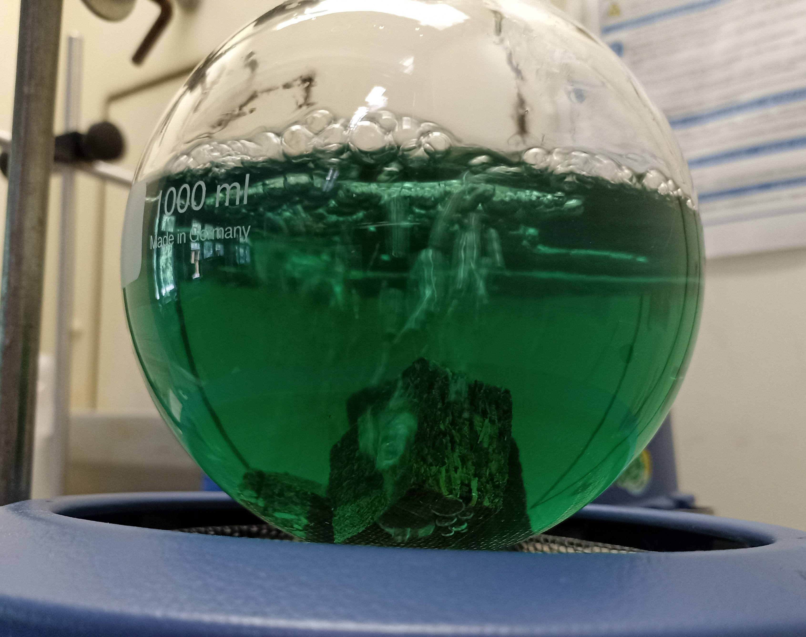

About me
Hi everyone,
my name is Axel and I live in a small town near Berlin (Germany). I am a trained carpenter and studied wood technologist, who is in the process of training himself to become a web developer.Skills
Programming
With the help of modules I completed at the distance learning university, I was able to acquire basic skills in imperative and object-oriented programming. I am still in the process of learning Java.
Teaching
Bringing other people closer to scientific topics and getting them excited about them gives me great pleasure. I have worked for several years as a tutor for students in mathematics and chemistry.
Science

I am a scientist at heart, and for a while I worked as a research assistant at a university in the field of chemical-technical research. I am still particularly enthusiastic about organic chemistry.
Woodworking
Wood is a wonderful and at the same time sustainable material that can be excellently processed with the appropriate know-how and optimally conditioned depending on the area of application.
Projects
Tindog
This project was about applying the skills already learned in using Bootstrap to a project. This involved creating a website, still without functionality using Javascript, to build the interface for a Tinder version for dogs.
Move with Joy
In this project the website for a moving company was created. In the process, basic skills with Bootstrap were consolidated. Previously, the basics as well as the scope were learned with prefabricated building blocks with Bootstrap.
This is the first independent project based solely on the techniques learned so far with HTML. Feel free to click on the heading that leads to the project, which contains the essential elements of my education.
Grid Art
Piet Mondrian was a Dutch painter of classical modernism who was born on March 7, 1872 in Amersfoort, the Netherlands. His artistic works could be excellently used to practice and consolidate the use of Grid in CSS.
Connect Four
After I successfully completed my first module at the Distance University in Hagen on object-oriented programming, I programmed a 4-game with the Abstract Window Toolkit in Java. This was my first independent (and successful) programming project.
Personal Interests
Running
I love to go running in the forest. Since I live in a forest town, I've been doing it regularly, and it helps me prepare for the Berlin half marathon, which I participate in every year.
Gym
I go to the gym regularly. This is a very healthy thing not only for the body, but especially for my psyche. I love the feeling of the pumped up body after an extensive workout.
Coffee
Nothing works for me without coffee. Absolutely nothing. Not even a little bit. But as soon as I have poured 3 liters of coffee into my body in the morning so that my heart beats again, I'm as happy as the man in the GIF here.
Tattoos
I am a big fan of tattoos. Especially photorealistic tattoos in Black and Grey have done it to me. I already have a few on my skin, the woman in the picture for example lives on my left arm.